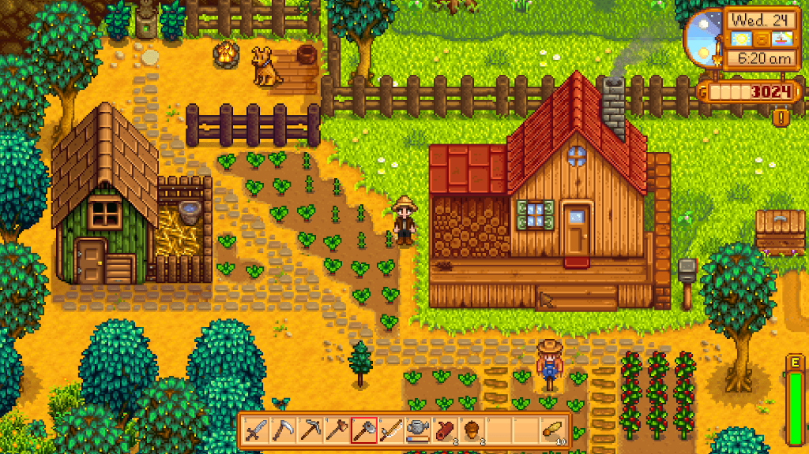

Live
Stardew Valley is a farming simulation game where players inherit a rundown farm in a small town. The game combines elements of farming, crafting, and relationship-building.
Grow
Players can grow crops, raise animals, mine for resources, and fish, all while exploring the town and interacting with its residents. Each season brings new crops and activities, encouraging players to manage their time and resources effectively.
Love
Building friendships and participating in town events add depth to the experience, as players can choose to pursue various storylines. With its charming pixel art and relaxing gameplay, Stardew Valley has become a beloved title for fans of simulation and adventure games.
Tips & Tricks
- Start by planting easy crops like potatoes or beans in the spring. Rotate your crops each season to maximize profits.
- Prioritize upgrading your tools (e.g., watering can, pickaxe) to make farming and resource gathering more efficient.
- Once you have a stable income, invest in animals. They provide valuable products like eggs and milk.
- Explore the mines for ores and gems. Mining is a great way to gather resources for crafting and upgrading.
- Fishing can be lucrative, especially when selling high-demand fish. Learn the best locations and times for fishing.
- Collect wild plants and forageable items around the town for extra income and crafting materials.
- Talk to villagers and complete quests to build friendships. This can lead to valuable rewards and events.

More Tips & Tricks
- Research crop values. For example, strawberries are excellent in spring, and blueberries are great in summer. Plant high-value crops for maximum profit.
- Fertilizers can boost crop quality and growth speed. Use quality fertilizer for better yields, and speed-gro to shorten growth time.
- Save your gold for tool upgrades and barn/coop expansions instead of spending it all on decorations early on.
- Plan your farm layout strategically. Group similar crops together and leave space for paths and buildings to make everything easily accessible.
- Upgrade your fishing rod and use bait. Fish can provide a steady income, especially during seasonal events.
- Start preparing for the next season a few days in advance. For example, clear your farm of leftover crops before the new season begins.
- Bring food and a weapon when mining. Focus on getting down to lower levels quickly for valuable resources but be mindful of health.